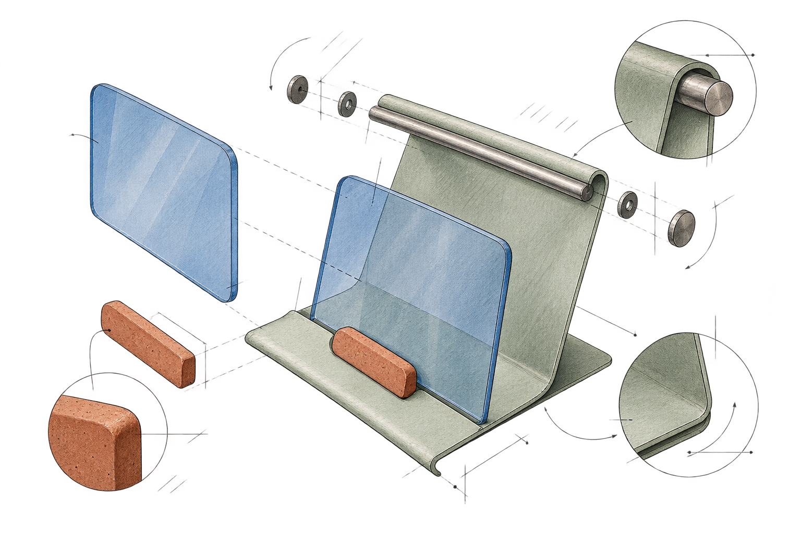
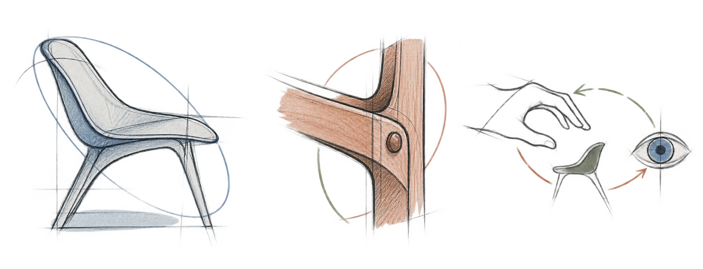

設計與社會 / 2026.09 / 待修訂
工業設計與中國現代化：從造型問題開始
把外觀、使用、製造與選擇放在一起討論；這是一篇待核對原論文的編輯整理稿。

一件產品的外形，很容易被當成最後加上的修飾。但造型並不只在最後發生：材料能否彎折、零件如何連接、人願不願意拿起它，都會慢慢把形狀推到某個方向。
造型不只是外殼
我們談過一個很小、卻很容易被忽略的問題：簡約是不是一定更好？如果刪去一個構件，製造更容易了，卻讓產品失去辨識度或使用時的線索，這種“簡化”未必真的改善了它。
外觀也有實際後果。它會影響人怎樣理解產品、願不願意接近它，以及在許多選擇之間為什麼停在這一件前面。這不等於讓好看凌駕於功能之上，而是承認功能、感受與市場判斷本來就會相互牽動。

現代化不是一種固定風格
如果把“中國現代化”直接譯成某一種流行外觀，就會跳過更重要的設計問題：誰在使用，怎樣生產，維修和更新由誰承擔，新的生活方式又需要什麼樣的物件？
同一種材料語言，放在不同的供應、成本與使用條件下，可能作出完全不同的選擇。因此，討論工業設計與現代化的關係，不能只把一組造型當成時代的答案；還要看支撐那種造型的系統與日常生活。
讓選擇有依據
一個構件可以因為結構、觸感、辨識度或情緒價值而留下；也可以因為它製造複雜、難以維護，或者與真正的使用情境無關而被拿掉。設計不需要預先站在“多”或“少”的一邊。
更值得追問的是：這個形式回應了什麼條件？如果換一種方案，誰會得到好處，又是誰承擔代價？把這些關係説明白，造型才不只是審美宣言，而成為可以討論的設計判斷。
編輯説明：這篇示範稿只依據目前可核對的網站討論整理，尚未對應你提到的具體論文；題名、論點和例證待你修訂。插圖是編輯示意，不是個人作品或論文圖稿。